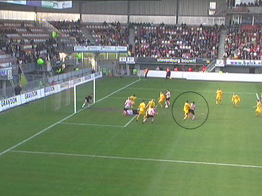
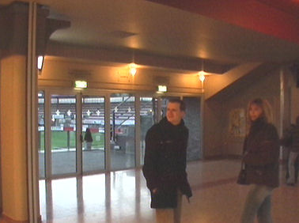

|
Sparta - Roda JC (2-2) 4 februari 2007
|
De meeuwen scheren voorbij de mooiste club van Rotterdam.

De fietspliesie.
De hardcore Roda-supporters bovenin het gastenvak.
Vier grote doeken over de Denis Neville tribune.
De spelers betreden het veld op het massaal meegezongen
SP-AR-TA.
Op de Kasteel-tribune.
Oper neemt de bal met de borst aan en...
... bedient Bodor die met links op doel schiet.
Wapenaar maakt een mooie zweefduik, maar de bal gaat er in:
0-1, (6'). Een droomstart!

Na een matige eerste helft met een uiterst partijdig fluitende
Haverkort wordt een zetje van Cissé bestraft met een penalty.
Kah gaat Polak nog even provoceren.
Helaas gaat de bal er keihard in: 1-1, (52').
Vier keer geel voor Roda en nul keer voor Sparta. Daarmee is de
scheidsrechter meteen de slechtste man van het veld. Zelfs op de
Kasteeltribune werd gefluisterd dat Sparta behoorlijk gematst werd
door deze marchandeur.
Een prachtig doelpunt via een dubbele omhaal van Cissé wordt
afgekeurd wegens buitenspel.
Alweer een afgekeurde treffer en alweer van Cissé. Omdat hij na
het fluitsignaal van de scheidsrechter (buitenspel) de bal toch in
het doel schiet krijgt hij de gele kaart.
Even later passt De Roover op Lopes.
De kersverse huurling schuift de bal in het lege doel: 2-1, (60').
De organisatie bij Roda is compleet weg en Sparta raast over de
bezoekers heen. Hier schiet Lopes op de paal.
Bal op de lat. Roda komt goed weg, maar naarmate het einde
naderbij komt gaat Roda steeds dwingender spelen.
Een fantastisch schot van Oper gaat diagonaal het doel in: 2-2,
(78').
De wedstrijd eindigt in een terecht gelijkspel. Kah spreekt Haverkort
nog eens aan over diens partijdige optreden vanmiddag.
Atteveld heeft een redelijke ouverture beleefd als hoofdtrainer. Hij is
er relaxed onder gebleven en bedankt alle spelers op het veld.
Net als verleden keer, afbieren bij de "Kasteelheertjes".

We waren zelfs welkom in de business. Overal heerst dezelfde
volkse gezelligheid.
En daar komen we onze oude trainer tegen die we opeens veel
sympathieker vinden dan die rat die naar HSV is vertrokken.
Wiljan laat weten dat hij Roda nog altijd op de voet volgt en een
warm hart toedraagt.
Nog een impressie van het business-gedeelte.
Wie "ken" het trotse SPARTA-gevoel beter tot uitdrukking brengen
als Jules deelder?!
Buiten het stadion is het ook nog gezellig.
Deze supportster van Anastasiou is de van oorsprong Griekse
Margaretha die ons hier de Griekse vlag gaat tonen.
©
Koempels Pleasure Dome
|